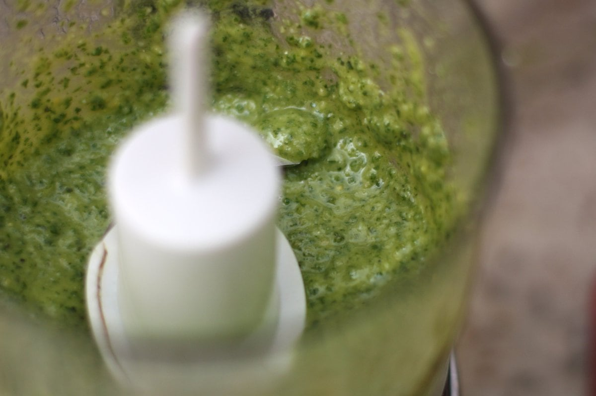

Pesto

Easy Peasy Dairy-Free Pesto Sauce
This pesto sauce is simple, delicious, allergen-free, and super versatile! The recipe doesn't contain any dairy which is really common in most pesto recipes. It comes together in just a few minutes. Picking the basil off your stems is by far the most complicated task involved, and it's a sinch. I recommend trying to remember the lyrics to Brian McKnight's old school hit 'Back At One' while you do this.
INGREDIENTS
- 3/4c basil leaves
- 3tbsp pine nuts
- 3/4tsp lemon juice
- 1/2tsp salt
- 1 clove garlic
- 3tbsp extra virgin olive oil
STEPS
- Lightly toast the nuts in a skillet over medium heat for 5 minutes.
- Place all ingredients except for oil in a small food processor.
- Slowly incorporate the oil while the machine is running, until a smooth paste has formed. Continue blending for 15 seconds to thin the sauce out.
- Alternatively, crush all of the ingredients in a mortar and pestle and blend until smooth.